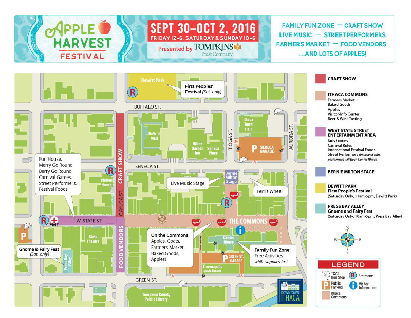

Information
Parking for the festival will be available in the Green, Seneca and Cayuga street garages for $5.
{kind=link}
Press to download the map above
Performance Schedule
Bernie Milton Pavilion - Saturday
10-10:45 am -- IC Voicestream
11-11:45 am -- Danza Romani
12-12:45 pm -- Vitamin L
1-1:45 pm -- Vee Da Bee
1:45-2 pm -- GIVEAWAYS
2-2:45 pm -- Sunny Weather
3-3:45 pm -- Eems
4-4:45 pm -- Dapper Dan
5-6 pm -- Papa Muse
Bernie Milton Pavilion - Sunday
10-10:45 am -- Mighty Jet Band
11-11:45 am -- Sixteen Feathers
12-12:45 pm -- Mirage Belly Dancers
1-1:45 pm -- Strong Woman Show
2-2:50 pm -- Diana Leigh Quintet
3-3:40 pm -- Science Cabaret Presents: A Bite of Science at Apple Harvest!
4-4:45 pm -- Ithaca College Jazz Vocal Ensemble
5:15-6:15 pm -- NEO Project
West State Street - Saturday and Sunday
Saturday 1-1:45 pm -- ICircus
Saturday 3-3:45 pm -- June with Chandani Belly Dance Troupe
Sunday 2-2:45 pm -- Zajal the Sugarplum Fairy and Friends for StoryDance
Sunday 3-3:45 pm -- Strong Woman Show